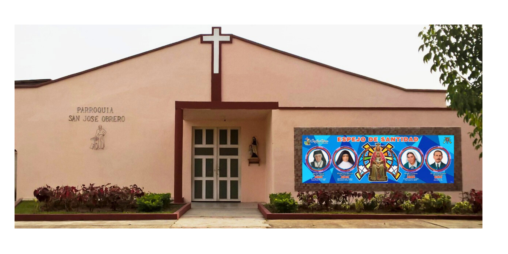
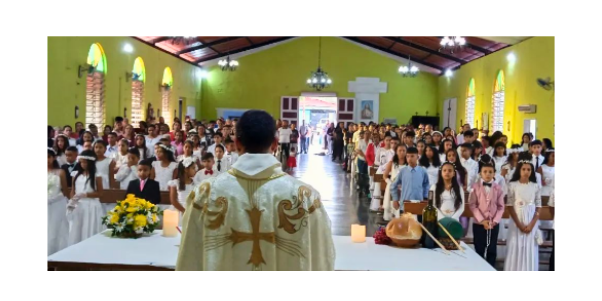
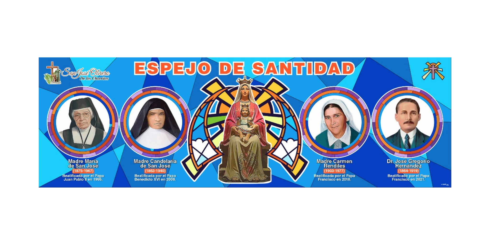
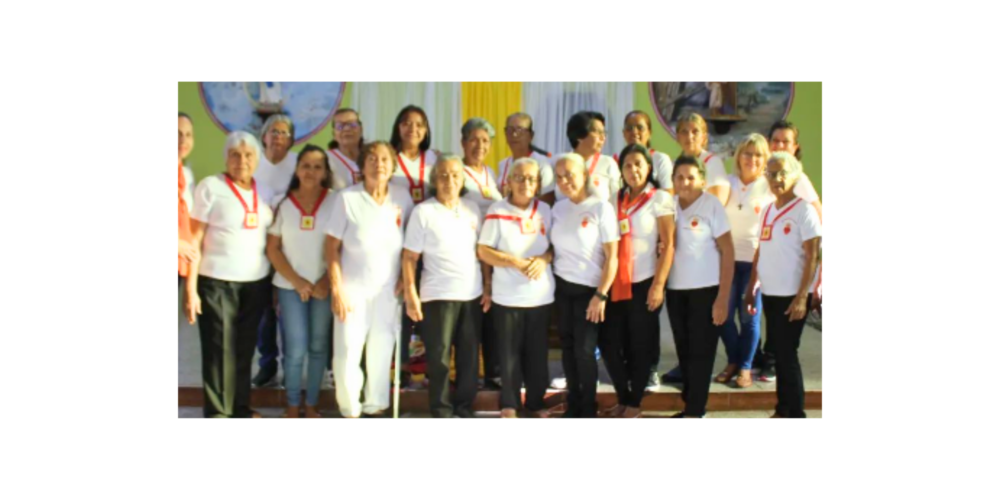

La Parroquia San José Obrero fue fundada el 1 de mayo de 1962 en la comunidad de Los Chorritos, Tocuyito. Desde entonces, ha sido un pilar espiritual en nuestra comunidad, ofreciendo servicios religiosos, eventos comunitarios y apoyo a los más necesitados.
Nuestra misión es promover los valores cristianos y proporcionar un lugar de encuentro para los fieles, donde puedan fortalecer su fe y servir a los demás. A través de nuestras actividades pastorales y sociales, buscamos ser una luz en la comunidad.
Contamos con diversos grupos parroquiales que incluyen: